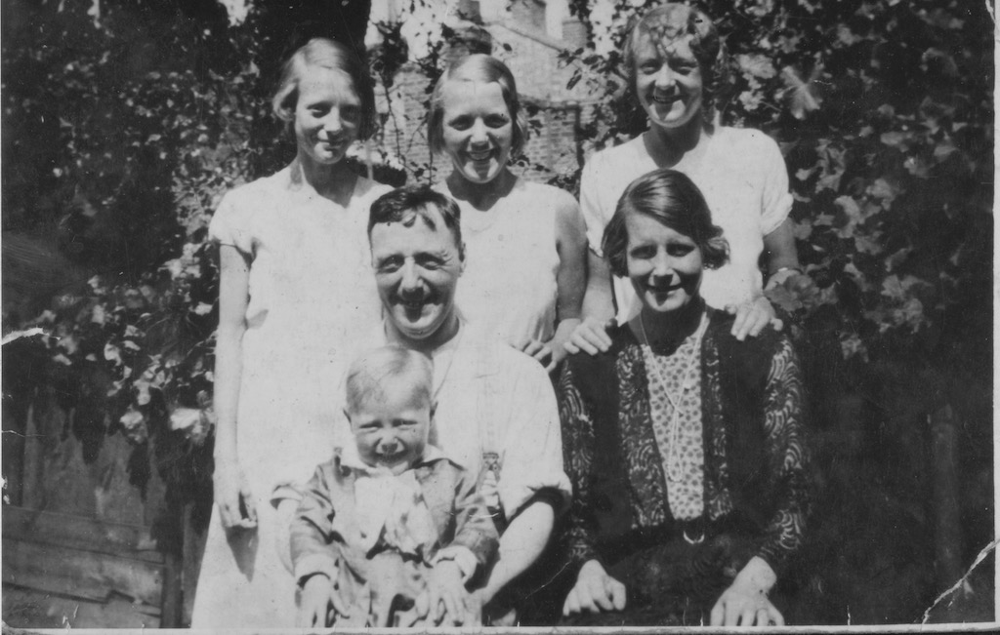
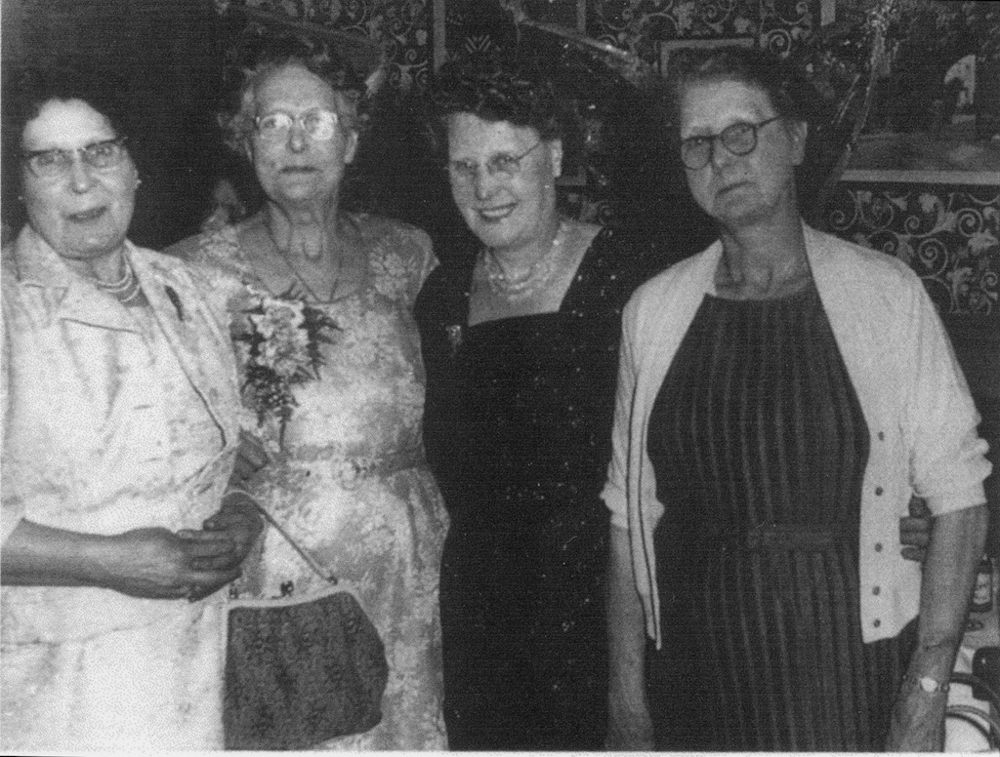
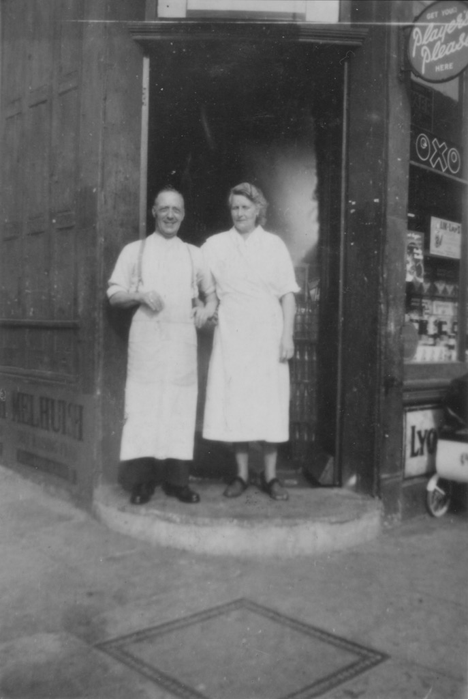
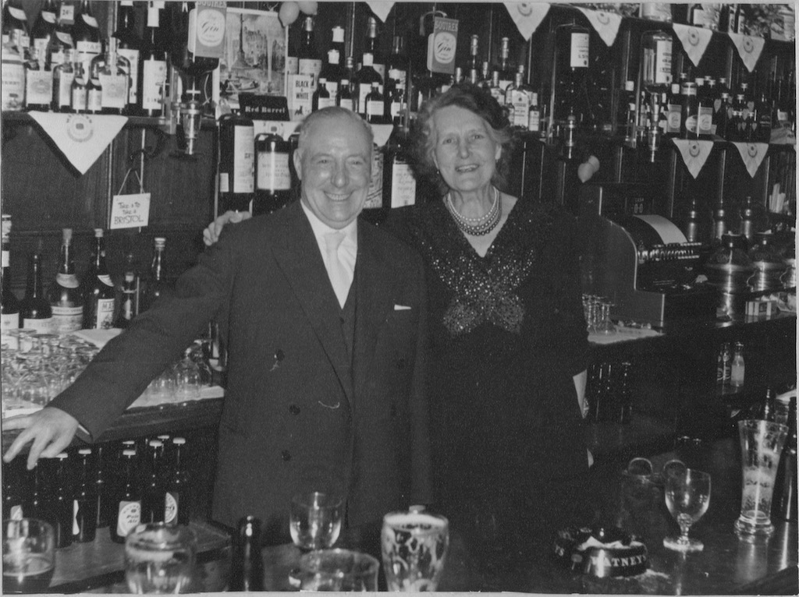
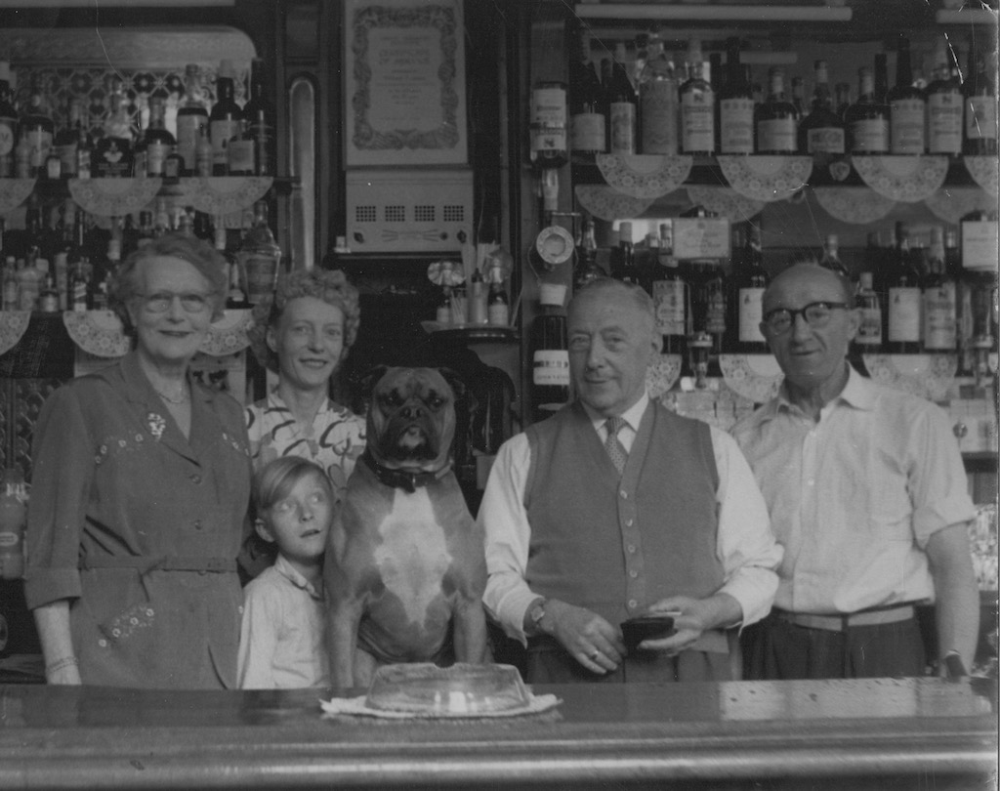
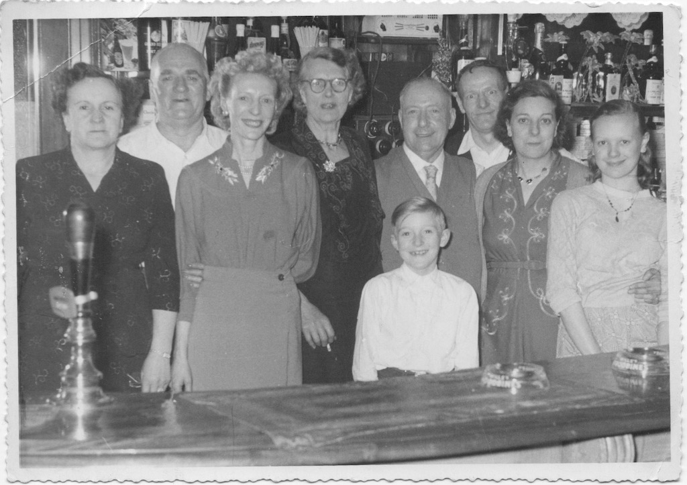

The earliest photo we have of Bill and Lucy James is this one with the three girls. From left to right we have Elsie, Lil and Lucy. We assume that is Mick sitting on Bill's lap, so that would put the photo at about 1929.
'Bill' was short for William George James. He died on 6th August 1984, we think at the age of 91, and cremated at City of London Crematorium. However, the 'In Loving Memeory' card says that he was only 71! Another note suggests that he was born in 1894, but we don't know which month. Interestingly, the same note suggests that Lucy was born in 1893. The James men, at least on our branch, all seem to marry slightly older women.
Bill had four brothers and one sister: Harry, Jim, Dick and Albert, and Lucy
 We can see from this 'Driver of Metropolitan Short-Stage Carriages' licence that in November 1932 Bill and Lucy were living at 19 Leanda Street, Haggerston, E8. (Click on the image to see a larger version.) At that time Bill would have been 29 or 30.
We can see from this 'Driver of Metropolitan Short-Stage Carriages' licence that in November 1932 Bill and Lucy were living at 19 Leanda Street, Haggerston, E8. (Click on the image to see a larger version.) At that time Bill would have been 29 or 30.
Lucy Elizabeth James (nee Travers) was one of four Travers sisters - left to right in the photo are Rose, Lucy, Maud and Alice. There was also a brother named Fred. Their mother died young and so Lucy, being the eldest, looked after the others.
 Lucy's father was a carpenter. This photo, judging by her hair style, would seem to be contemporary with the first photo of Bill, Lucy and the girls (and Mick).
Lucy's father was a carpenter. This photo, judging by her hair style, would seem to be contemporary with the first photo of Bill, Lucy and the girls (and Mick).
Bill was on the Western Front in France during the First World War, but continued as a bus driver throughout the second. We believe that Bill was involved in the movement of equipment using teams of mules. One story is that if the mules would not move then they would call Bill, who got them going, but no one knew how. It seems that he would keep a piece of coke in his pocket and place this under the mule's tail. When he wanted the mule to move he would, from his position on the wagon, push his foot on the mule's tail and off they would go! There was talk of Lucy going to live with relatives in Northampton during the war. This could have been with her brother Fred, who may have been a publican. However, in the mid fifty's Bill and Lucy ran a corner shop, somewhere in the east end of London, possibly Shoreditch.
However, Bill always wanted to run a public house. So probably after the shop they moved to firstly The Champion and then The Nags Head at Islington, although the Weavers Arms may have been another pub that they ran. The first photo, of Bill and Lucy, is probably at The Champion. The other two are at the same pub, probably The Nags Head. The boxer dog was called Butch. He had a habit of sitting on your feet! In both, the young boy is Martin, Elsie's son, and the girl on the right is Eileen, the daughter of Dick and Flo, who are standing next to her.
  The final photo is at Bill and Lucy's Golden Wedding party. This took place on Wednesday April 4th 1962 at the Weavers Arms. However, from the note mentioned above, we believe that they were married on April 7th 1912. From the right we can see Mick, Lucy, Bill, Lil and Dick (and then, of course, Bill and Lucy).